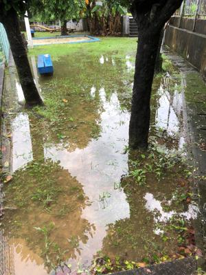
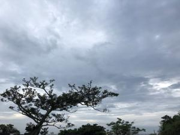
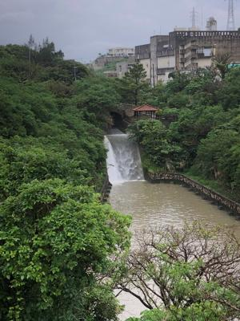
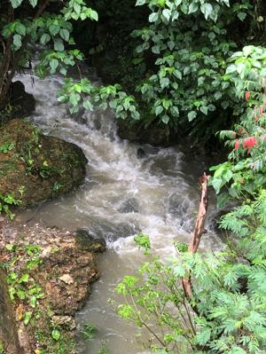

うるがいの話 ある日
最新: 洋食のマナー【うるがいの話 ある日】とは 一日だけのプログです
『うるがいの話』の最新一日だけのプログで、通信料が少なく経済的だ。カニの画像をクリックすると全ての日付が載る『うるがいの話』サイトを表示します
|
|
【うるがいの話】 うるがい(ｳﾙｶﾞｲ urugai)とは、『もずくがに』の名前でとても大きくなります。 |
|---|---|
|
|
【カミマヤーの話】 猫のことを方言でマヤーといいます。カミマヤー（kamimayaa）とは、神の猫のことです。 |
|
【たながぁの音楽】 たながぁ（ﾀﾅｶﾞｰ tanagaa）とは手長えびのことで、何種類かあり大きいのは車 エビぐらいになります。 |

|
【ぶながぁの話】 ぶながぁ(ﾌﾞﾅｶﾞｰ bunagaa)とは、赤い髪の毛、赤い身体、そして身長は１ｍ２０ｃｍ ぐらい、川の蟹を食べているの目撃された。場所は沖縄県国頭郡大宜味村のと ある村僕の隣近所に住んでいる爺さんから、聞いた話です。 |
|
|
【ギーマの話】 ギーマ(giima)とは、山原の里山に咲くスズランに似た、 花を付けます。実は食べられます、 気が付くと口の周りが紫になっています。 |
2022年06月12日 (日）洋食のマナー
15:59
   
岩城 宏之の『オーケストラの職人たち』より
日本には、外国から取り入れた最初の段階で誤解してしまい、そのまま定着し
ている考え方や習慣が、かなり多い。洋の東西の文化の違いや、世界中の国と
か民族同士の思い違いなど、どっちみちお互いさまではある。気になるわが国
での代表的な例を、三つ挙げる。まず洋食のマナーである。右利きの場合、パ
ンを取らないでライスを食べる人は、メインディッシュの左側にライスの皿を
置く。われわれがフォアグラをのっけたステーキを、ご飯と一緒においしく食
べるのは自由だが、食べ方が珍妙なのだ。いまだに方々のレストランで見かけ
るのは、フォークの山なりの背にライスをのっけて、おそるおそる口許に運び
、スーッと吸い込んでいるオジサンやオバサンの動作である。どうしてあんな
難しいことをやっているのだろう。
読んでて恥ずかしくなった、そのオジサンに該当する。因みに正解は『間違っ
ている人が多い！洋食でライスを食べる時、フォークを持つ手はどっち？
【オトナの常識＃15】』
フン、そんな！右手にフォークを持ちかけ、ライスをすくって・・、ただ普通
はそんなことはせず、箸を使って食べている。マナーは難しいもんだ。
１５時５０分 ビットコインの総資産 ￥１０、７１３↓